Episode 129: Ima Through the Looking Glass? This week ImaNewbie sets out in the Lost Lands looking for the new Khaldun Dungeon. What he finds is something else altogether
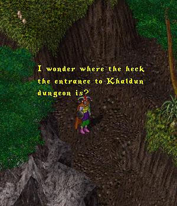
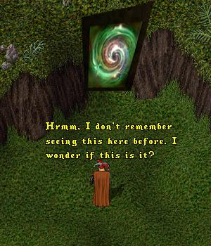
Not one to be cautious, ImaNewbie steps bravely into the strange portal.
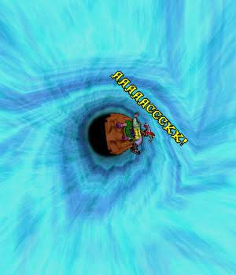
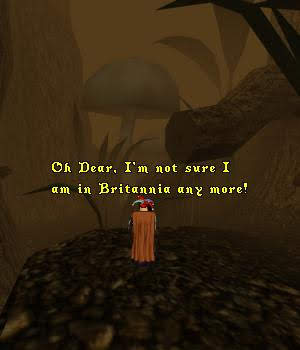
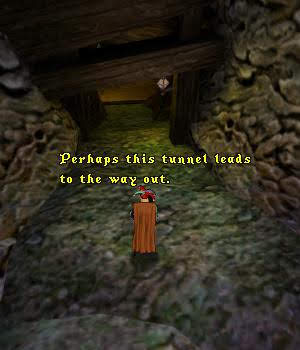
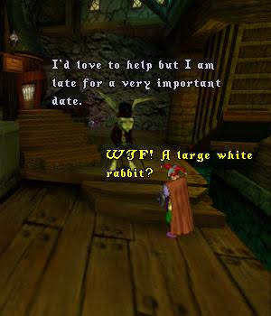
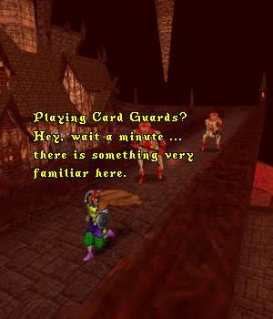
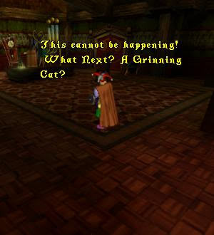
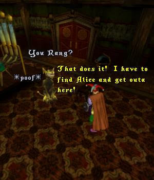
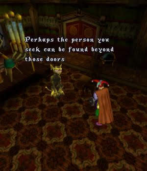
Stepping through the doors ImaNewbie comes face-
to-face with none other than Alice herself. Surely
this sweet, innocent child will be able to help
ImaNewbie return to his beloved Britannia.
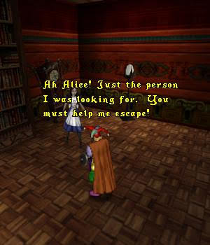
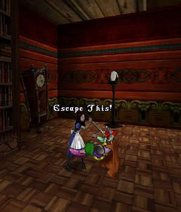
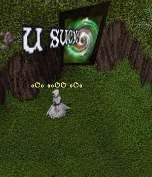